Emulation Station Powered
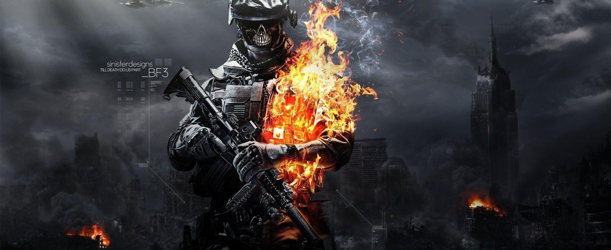
E
N
J
O
Y
T
H
E
G
A
M
E
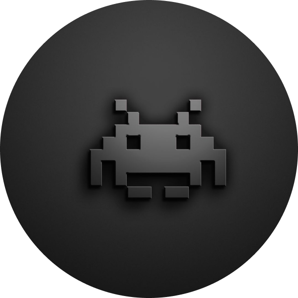
Xemulartor no es un emulador en sí, sino una aplicación que sirve de base para instalar
en ella
diferentes
emuladores y ejecutar con ellos las ROMs. Por lo tanto, para poder utilizar los juegos
de
determinada
consola no vale con sólo descargar Xemulator, sino que después tendrás que cargar en la
aplicación
el
emulador correspondiente.
Esta aplicación es la solución de referencia basada en LibRETRO, una sencilla API que
permite la
creación de
juegos y emuladores. Se trata de un sistema modular que permite cargar diferentes
núcleos, cada uno
de
ellos
con un emulador, todo ello pudiéndose hacer desde la propia aplicación. Además de
RetroArch, en esta
tecnología también se basan otros proyectos simulares como LaKKa o RetroPie.
Emuladores
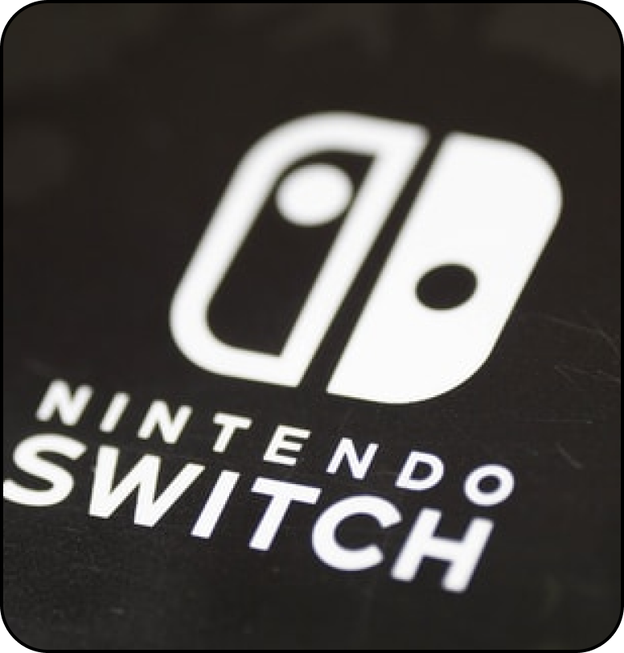
Nintendo Switch
Play Station
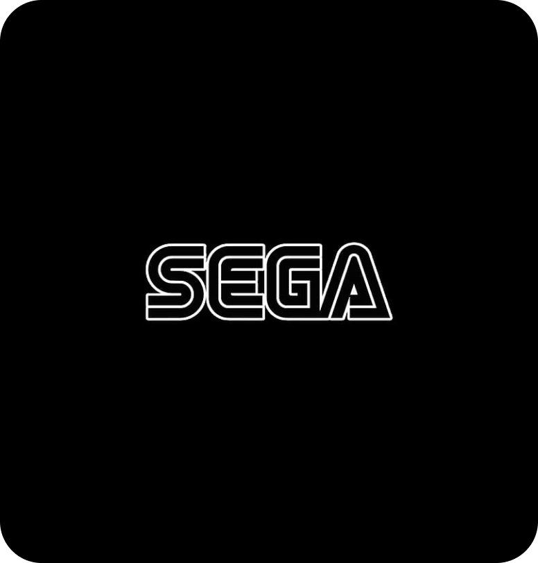
Sega
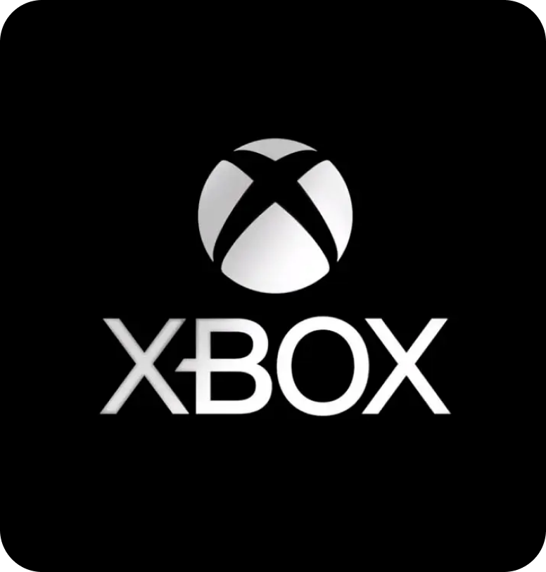
Xbox
Con Xemulator vas a poder cargar emuladores de prácticamente cualquier consola clásica
que te pase
por
la
mente. Entre su catálogo de núcleos, te puedes encontrar emuladores para Atari, MAME,
DOS, Game Boy,
Game
Boy Advance, NES, Nintendo 64, Nintendo DS, PlayStation, PSP, ScummVM, Sega Master
System, Mega
Drive,
Mega
CD, Saturn, Super Nintendo o ZX Spectrum entre otros. Y no solo uno, ya que hay casos en
los que hay
varios
núcleos para emular una única consola.
También es compatible con prácticamente cualquier mando de control, configurándolos
automáticamente
en
cuanto los conectas, pero permitiéndote también mapearlos manualmente e incluso
asignarles acciones
especiales para realizar combos. Todo ello con muy buenos tiempos de respuesta para
minimizar al
máximo
la
latencia de los mandos.
Juegos
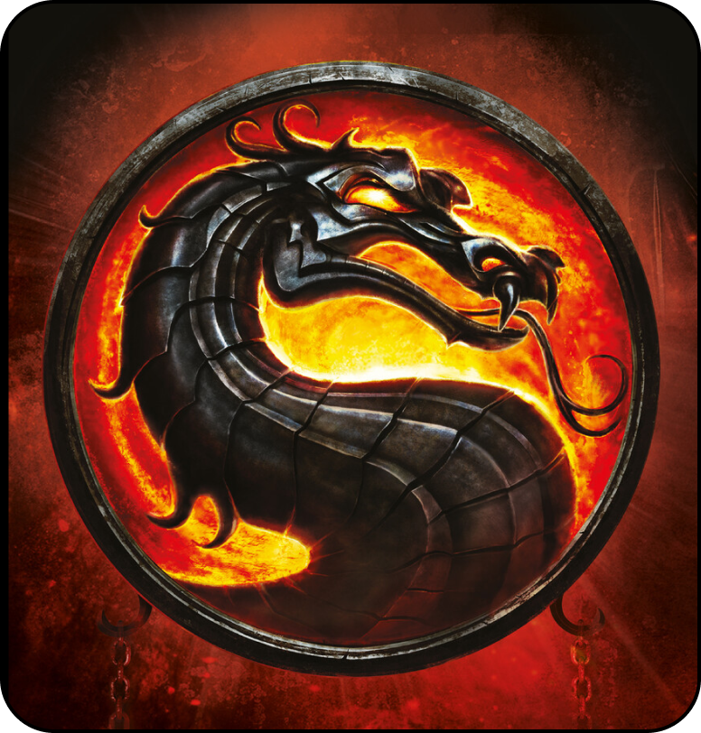
MortalKombat
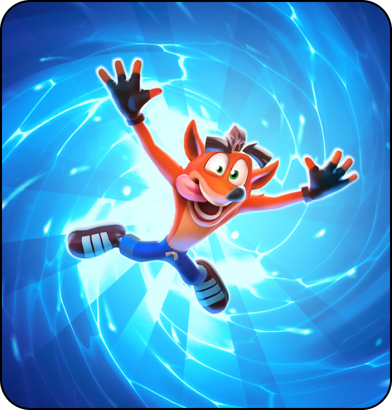
Crash Bandicoop
ResidenteEvil
GTA Vice City
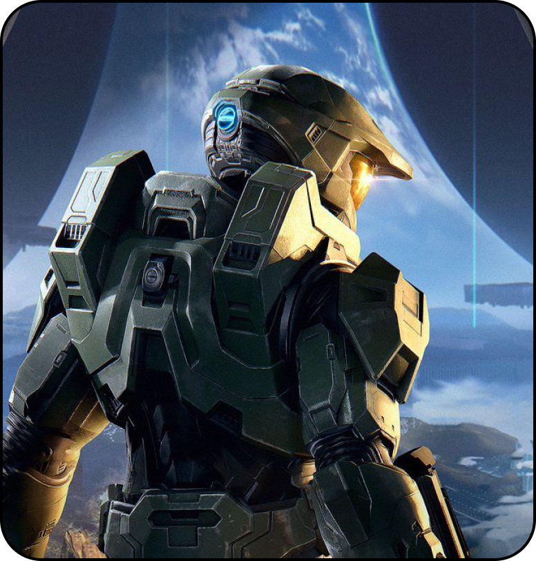
Halo
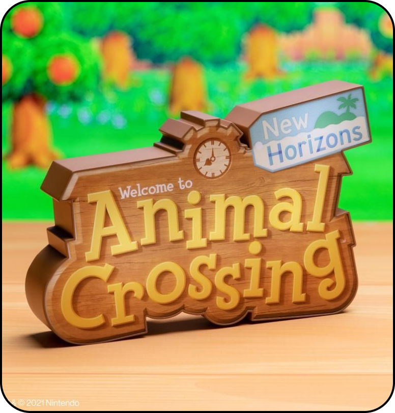
Animal Crossing

Pes 6
Lego
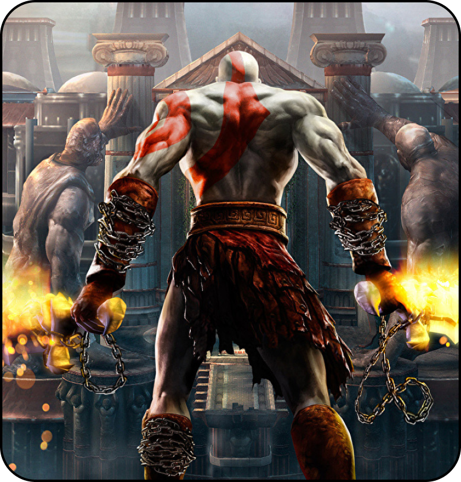
God Of War
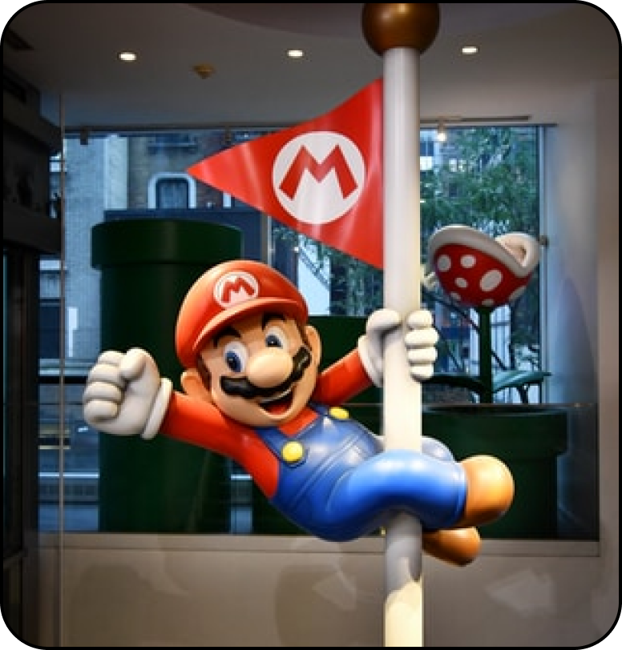
Mario Bross

Pokemon
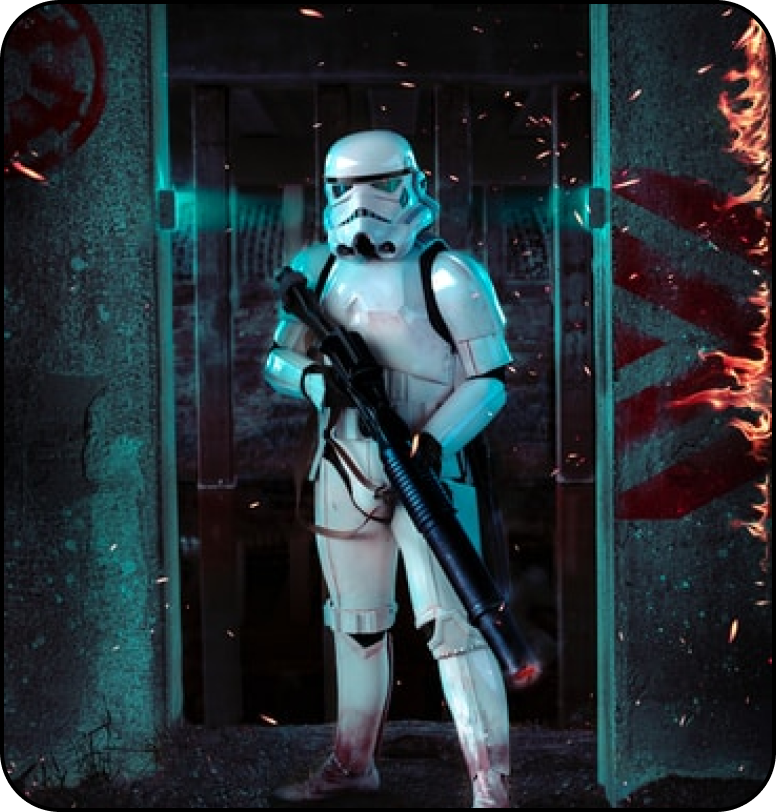
StarWars
REQUISITOS DEL SISTEMA:
MINIMO:
SO: Microsoft Windows 7
Procesador: Intel Pentium 4 and up (CPU with SSE2 instructions required)
Memoria: 32 MB de RAM
Gráficos: Any compliant OpenGL 2.x or Direct3D11 GPU. For shaders to work properly,
should support
at
least Shader Model 2.0.
DirectX: Versión 11
Notas adicionales: For OpenGL: Intel HD 2K/3K GPUs on Windows 10 will have to fall back
to an OpenGL
1.1
driver.
RECOMENDADO: SO: Microsoft Windows 10 Procesador: Intel Core series or AMD equivalent Memoria: 512 MB de RAM Gráficos: Intel: At least Intel HD 4K required for OpenGL, any compliant D3D11 GPU for Direct3D 11. Should support at least Shader Model 3.0 and/or 4.0. DirectX: Versión 11 Notas adicionales: For OpenGL: Intel HD 2K/3K GPUs on Windows 10 will have to fall back to an OpenGL 1.1 driver. Xemulator is free/open source software, available under the GNU GPL 3.0 license.
RECOMENDADO: SO: Microsoft Windows 10 Procesador: Intel Core series or AMD equivalent Memoria: 512 MB de RAM Gráficos: Intel: At least Intel HD 4K required for OpenGL, any compliant D3D11 GPU for Direct3D 11. Should support at least Shader Model 3.0 and/or 4.0. DirectX: Versión 11 Notas adicionales: For OpenGL: Intel HD 2K/3K GPUs on Windows 10 will have to fall back to an OpenGL 1.1 driver. Xemulator is free/open source software, available under the GNU GPL 3.0 license.